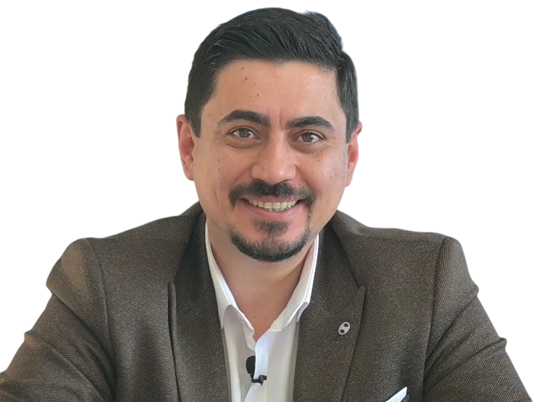

SGK anlaşmalı işitme cihazları, ücretsiz ön değerlendirme, işitme testi, cihaz uygulaması ve satış sonrası destek hizmetleri ile yanınızdayız.

Eğitimci • Bilirkişi
İŞİTKOOP Başkan Yardımcısı
İşitme seviyenizi profesyonel ekipmanlarla değerlendiriyoruz.
Karar vermeden önce işitme cihazını deneyimleme imkanı.
SGK desteğine uygun işitme cihazı çözümleri sunuyoruz.
Cihaz bakım, ayar ve teknik destek hizmetleriyle yanınızdayız.
Dünya'nın önde gelen işitme cihazı markaları ile hizmet veriyoruz.
Danimarka teknolojisi ile doğal ve net işitme deneyimi.
İleri bağlantı özellikleri ve güçlü performans.
Şık tasarım ve gelişmiş işitme teknolojileri.
Doğal ses kalitesi ve yüksek kullanıcı memnuniyeti.
Yapay zeka destekli yenilikçi işitme çözümleri.
Modern teknolojiler ile konforlu işitme deneyimi.
İşitme seviyenizi profesyonel ekipmanlarla değerlendiriyoruz.
Size en uygun cihazın seçimi ve kişiye özel ayarlanması.
Konforlu kullanım için kişiye özel kulak kalıbı çözümleri.
Bakım, temizlik, onarım ve performans kontrolleri.
Mevcut cihazınızın işitme seviyenize göre optimize edilmesi.
Cihaz kullanım süreci boyunca profesyonel destek.
İşitme cihazı seçiminde çok yardımcı oldular. Süreç boyunca her sorumuza cevap verdiler.
Babam için cihaz aldık. İlk günden itibaren ilgileri ve destekleri çok iyiydi.
İşitme testi ve cihaz ayarlama süreci son derece profesyoneldi. Tavsiye ederim.